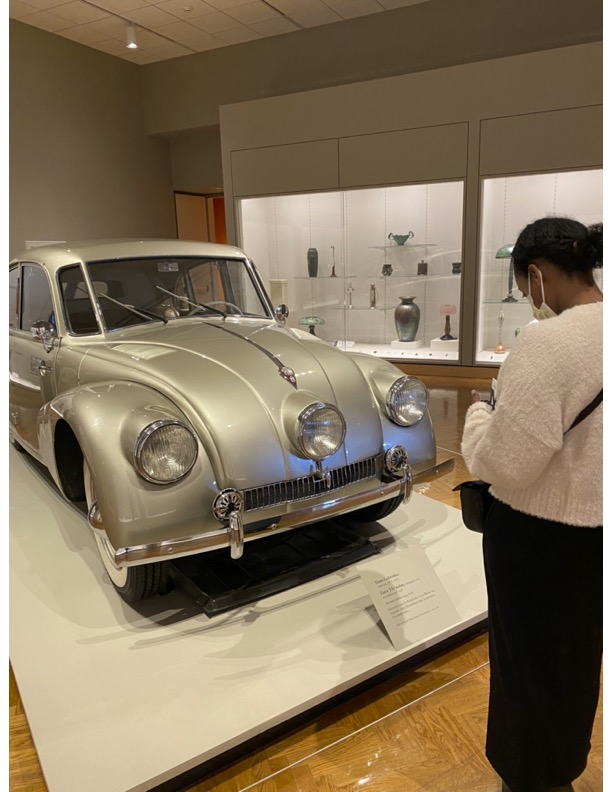

Vintage Cars
Vintage cars serve as captivating narrators of history, weaving tales of bygone eras with every polished chrome detail and purring engine. Reminiscing on my childhood, I fondly recall my father's ownership of a venerable FIAT, its aged charm transporting us through countless memories and journeys. Surrounded by individuals who cherished classic collections, spanning from cars to radios to furniture, I discovered an enduring appreciation for the elegance and craftsmanship of yesteryear. These experiences have indelibly shaped my perspective, instilling within me a profound admiration for the timeless allure of vintage treasures and their ability to evoke nostalgia and admiration alike.
